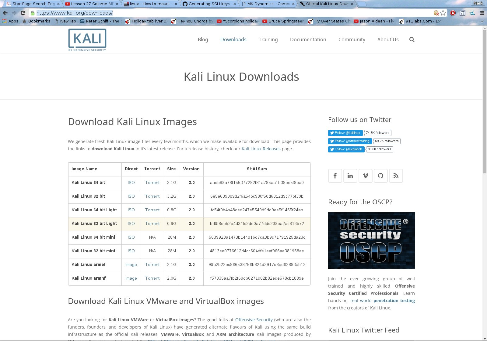

Introduction
Kali Linux is a specially designed build of Debian that is tailor
made for the computer security community. It is preloaded with
tools used by computer security researchers and penetration testers.
Installing the Kali Linux 2.0 Virtual Machine

Download the appropriate ISO image for your machine. This will be run in a Virtual Machine.
Kali Linux with terminal open

Discussion:
The terminal window is where most tools are initiated from,
although many tools can be accessed from the drop-down menu.